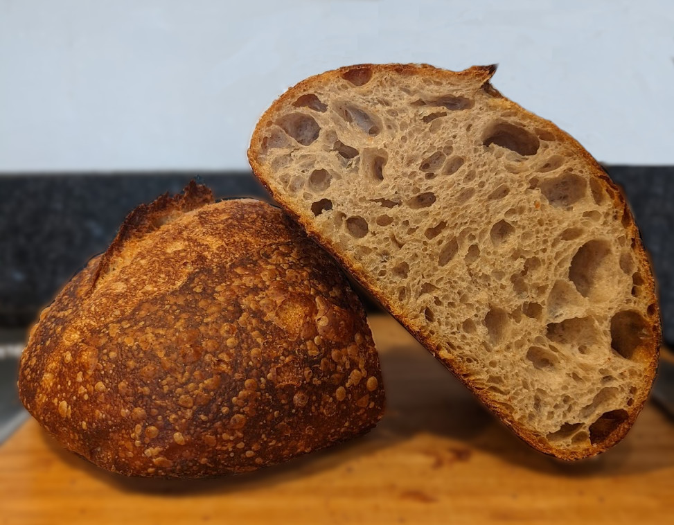

# Sourdough Method

The steps I use to make sourdough, published here so I can
complete my orbit around the Nerd Sun (and because someone asked
for it).
I've done a fair bit of trial and error over the course of a
year and am by no means an expert, but when reading recipes
online I found there was a of explanation as to _why_ certain
steps are done, so I've tried to give my interpretations of the
reasons for various steps as far as I understand them (which may
or may not be accurate).
The text for this guide lives
[here](https://github.com/actionshrimp/actionshrimp.github.io/blob/master/src/sourdough-guide/index.html)
if you feel like I've got something wildly inaccurate or I've
missed a crucial detail and feel like correcting me.
This assumes:
- you're making the bread (usually every week) on Saturday, leave it in the fridge overnight and then bake it on Sunday morning.
- you already have a fairly active starter.
- your room temperature is somewhere in the low 20s (°C). A
temperature change of even a couple of degrees can have quite
a big effect on timings (warmer speeds things up a lot!), so
what worked for you in winter will probably need adjusting in
summer. When you're starting out this seems like a big pain in the ass
(_"I just wanna follow some instructions, damnit!"_) so I've
tried to give ways to tell what stage things are at for a
particular baking session where possible, although sometimes
trial and error is the only way I'm afraid as your starter is
unique and special (just like you).
- I tend to bake most weekends at the minute , and the rest of the time I keep my starter (Doughboy) in the fridge.
- You'll want to (approx.) the same amount of flour and water together [[2](#foot-2--flour-water-ratio)], but you can add more flour/water relative to the amount of starter if you want the starter to take longer to reach its peak (i.e. you don't always have to do a 1:1:1 ratio when feeding).
- Rye flour genuinely seems to make my starter a lot livelier compared to using just plain flour on its own.
- Have two identical jars (**A** and **B**), it makes life/cleanup a lot easier (mine are about 500ml [[1](#foot-1--jars)]).
### Feeding the starter before putting it in the fridge for the week
Start with:
- 20g starter
- 40g flour (20g plain, 20g rye)
- 40g water
Shove it all in jar A, this should give the starter a decent amount
of food to get through. It will probably expand a bit and then drop
back down over the course of a few days.
If the starter seems inactive when you try and bake with it
(assuming it's usually active), or you're leaving it for longer than
a week, you might want to experiment with adding a bit more
flour/water (in equal parts) to appease the yeast.
### Waking it up to bake
Friday evening at about 8pm, make the leaven [[3](#foot-3--leaven)].
I need 140g of starter to make two loaves which this covers, with a bit left over to go back in the fridge.
Start with:
- 15g starter from jar A
- 80g flour (40g plain, 40g rye)
- 80g water
Shove it all in jar B and leave it out overnight. Empty out jar A, put it in the dishwasher overnight (we'll need it tomorrow morning)!
The idea here is to give the starter plenty of food to eat
overnight, so it is roughly approaching its peak the next
morning and raring to go when we actually use it in our loaf
(9 or 10am). As before you can experiment with the the
amount of starter relative to flour. For example, reduce the
starter quantity to e.g. 10g if you want this process to
take longer so you can bake later in the day (as the amount
of food available to each gram of starter will be greater).
### Completing the cycle
Once you've used the 140g of starter to bake with (see next section), mix your required amount of the remainder with flour and water back into the (now clean) jar A to put back into the fridge for next week and give jar B a clean.
### Notes
**[1]** I have [these jars](https://www.amazon.co.uk/gp/product/B078WYZZ4Y/ref=ppx_yo_dt_b_asin_title_o08_s00?ie=UTF8&psc=1), although they aren't ideal (quite high/narrow which makes stirring in flour/water quite difficult) and I'd probably get some different ones if I hadn't bought these ones already!
**[2]** if you're experimenting with different hydrations, I've read that trying to feed with the flour/water ratio for the hydratio youre aiming for can help 'train' your yeast for its baking conditions, but I don't particularly understand why this would help here / haven't tried it myself. Using 1:1 flour/water (or with even a tiny bit more water) makes it a lot easier to mix together with a spoon!
**[3] leaven**: starter offshot that's actually used to make bread with
I tried experimenting with different hydrations at the beginning as I got obsessed with the idea of high hydration being somehow fancier. I just ended up with loaves that were big blobs though, and reducing the hydration a bit seemed to fix it. I'm fairly convinced the hydration you can get away with is mostly guided by the flour you use [[1](#foot-1--hydration)]. The quantities I give seem to work for the flour I'm using. If you end up with big blobs try adding a bit less water the next time, even 10 or 20g less water can make a big difference.
### Notes
**[1]** although more working of the dough and your shaping skills seem to allow you to get away with slightly higher hydrations